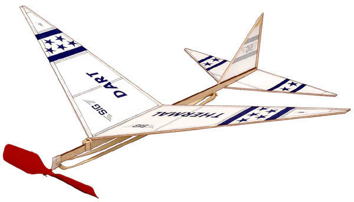
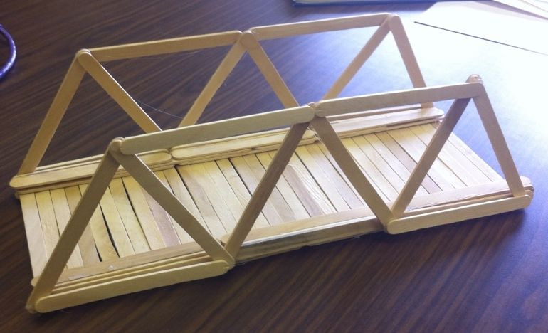
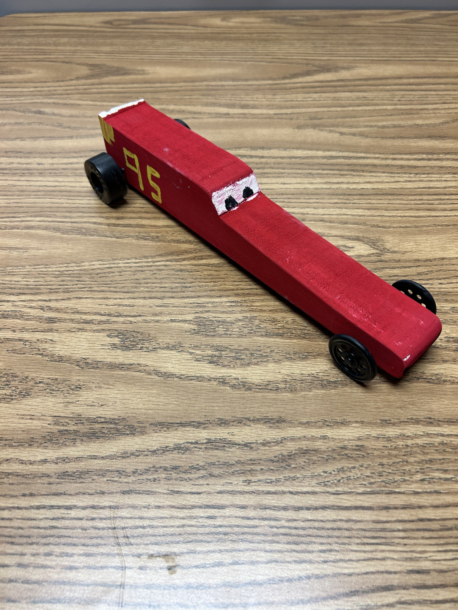
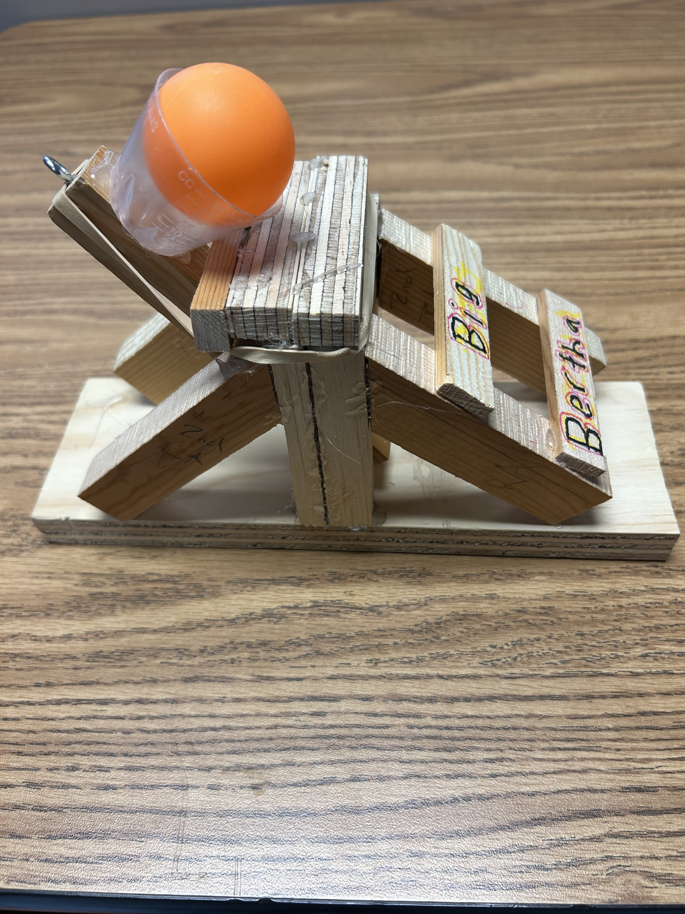

he IT Apps and Design will focus on developing student creativity, design, inventive, and technical skills. Students will be provided authentic experiences and design challenges in which they will interact with the Design Thinking process. Through authentic experiences, students will individually and collaboratively learn to: Define, identify, communicate, and test a problem. Explore, empathize, define, ideate, prototype, and test their innovative solutions. Determine the importance of perspective. Learn to be resilient learners. Utilize the design process to enhance critical thinking and problem solving skills. Enhance the development of modern technological skills. Students will be provided a multitude of interest-based experiences through programming, graphic design, leadership, robotics, woodworking, rocketry, flight, architecture, engineering, and a variety of other mediums.
Course Overview
In this class, you'll learn how to:
- Identify and define problems
- Brainstorm and develop solutions
- Create prototypes
- Test and refine your designs
Project Examples




FAQ